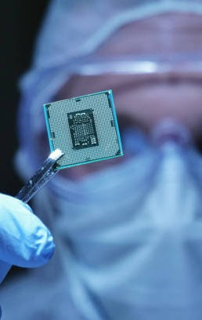

LGAC
Nanociencias y materiales avanzados
Objetivo
Diseño, caracterización y aplicación de estructuras, dispositivos y sistemas complejos mediante el control de la forma, el tamaño y las propiedades de la materia a escala macro, micro y nanométrica, de manera multidisciplinaria relacionando la bioquímica, la química, la física, la biología, la medicina y la ingeniería.
Justificación
Hacer investigación científica de alto nivel orientada a la aplicación tecnológica y la innovación, para ello, tiene como pilar un grupo de científicos de diferentes áreas. Además, fomentará la generación de nuevos conocimientos en temas de frontera en campos que involucren la nanotecnología y/o la ciencia de materiales, con el propósito de establecer en el futuro, una economía sólida basada en el conocimiento e innovación, así como fortalecer la formación de profesionales integrales con capacidades interdisciplinarias y conocimientos específicos adecuados para afrontar los desafíos de esta área. Un eje relevante será estrechar vínculos con el sector productivo, tecnológico, de salud, entre otros; para hacer investigación aplicada, y fomentar el desarrollo de proyectos de investigación enfocados en necesidades del país para favorecer la soberanía científica y tecnológica.
Enfoque
Esta línea de investigación se centra en el diseño, caracterización y aplicación de estructuras, dispositivos y sistemas complejos mediante el control de la materia a escala macro, micro y nanométrica. Su enfoque es inherentemente multidisciplinario, integrando conocimientos de bioquímica, química, física, biología, medicina e ingeniería. Esto la convierte en una LGAC con un vasto potencial para la innovación en diversos sectores.
